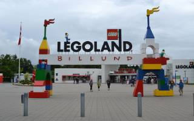

Legoland er et mærke og varemærke, ejet af Merlin Entertainments, for forlystelsesparker, som har legetøjet Lego som tema. Den første park åbnede i Billund i 1968 som en udendørsudstilling med Lego-huse, landskaber, kørende tog og sejlende skibe. Det blev suppleret med en trafikskole, et stort Lego-tog, en indianerlejr, et dukketeater og en dukkesamling. Nye parker efter samme koncept er opført i:
Lego solgte i 2005 parkerne til det britiske selskab Merlin Entertainments Group, som Kirkbi (holdingselskab og pengetank for Lego) er medejer af. Legoog Kirk-familien, som ejer Lego, købte ved samme lejlighed nemlig 30 procent af aktierne i selskabet. Kædens 6 parker (2015) omsatte for 1,9 mia. kroner (1. halvår 2015).

I 2019 købte LEGO Legoland tilbage og har nu arrangeret LEGO Movie World i 2020. LEGO Movie World bliver lavet efter LEGO Movie og LEGO Movie 2 med 3 forlystelser.